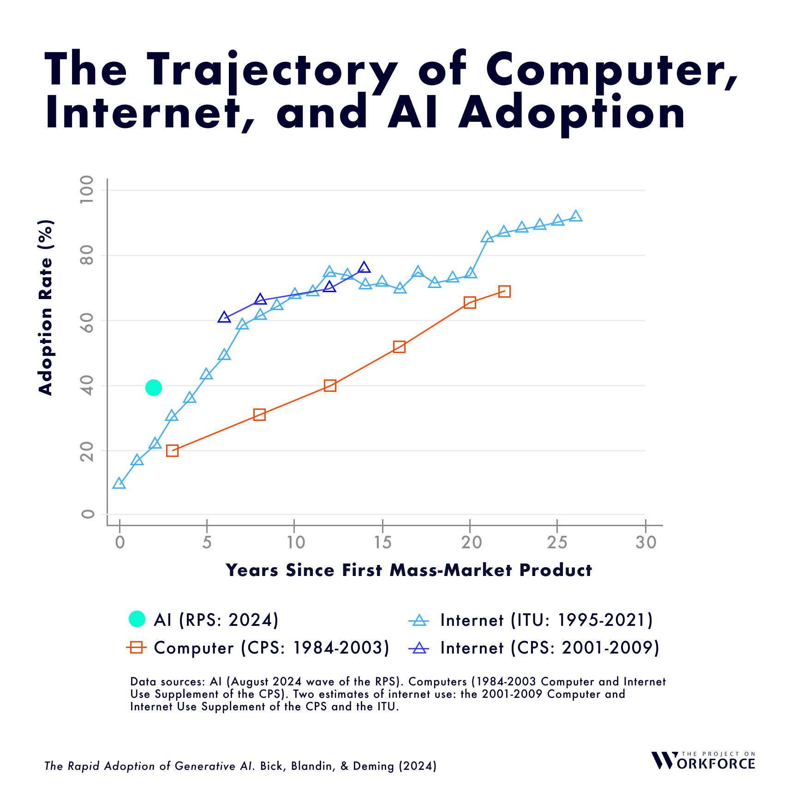
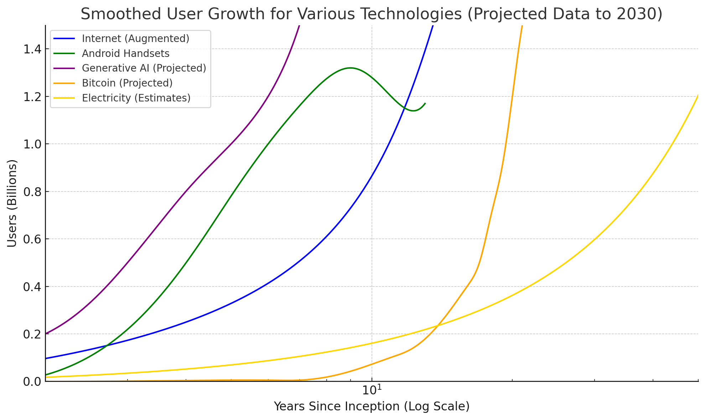
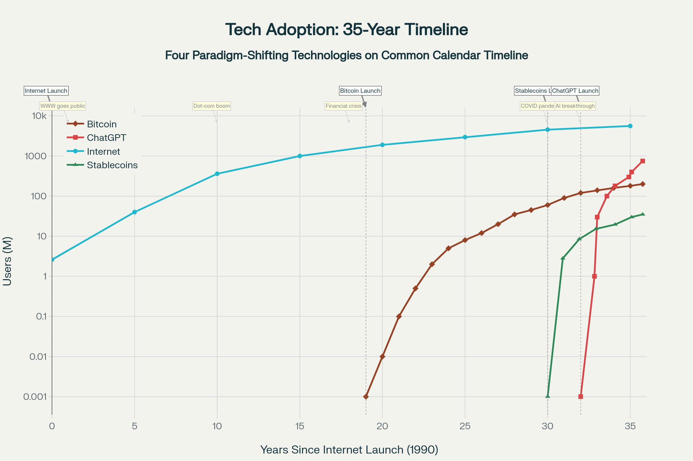
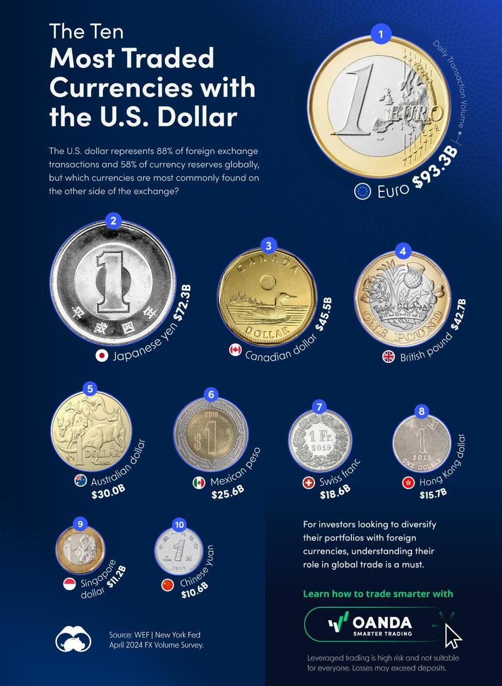
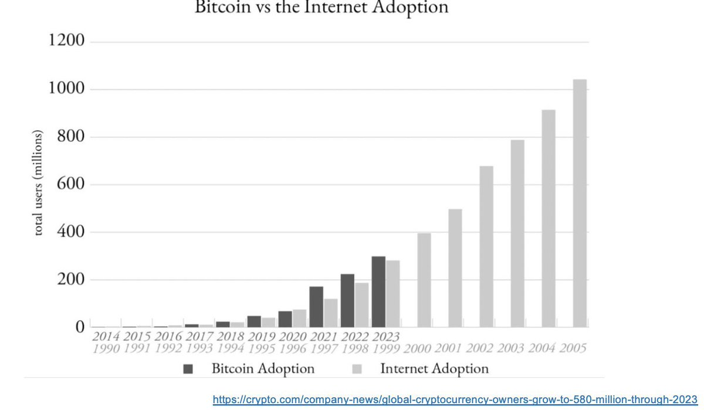
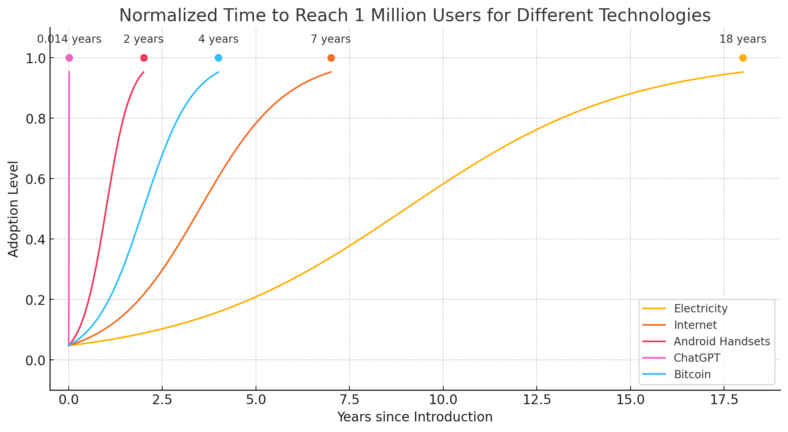
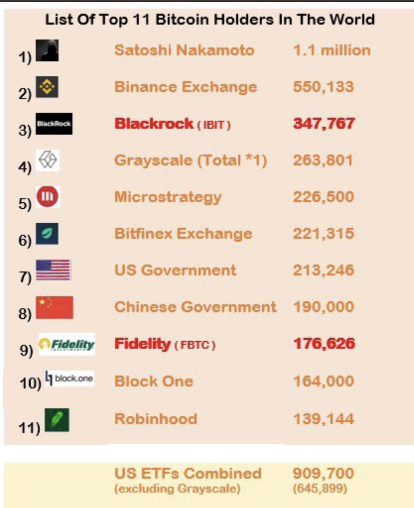

Stanford AI Index 2024
- The 2024 Stanford AI Index Report offers a comprehensive analysis of artificial intelligence’s trajectory, encompassing technical advancements, economic implications, and societal perceptions. Below is a synthesized overview, reflecting on the report’s key findings and their broader significance. (Quid x 2024 Stanford AI Index Report)
AI’s Performance: Surpassing Humans in Specific Domains
- AI systems have outperformed human capabilities in tasks such as image classification, visual reasoning, and English comprehension. However, they continue to lag in complex areas like advanced mathematics and strategic planning. (Stanford AI Index Report 2024: Key Insights & Trends)
- This dichotomy underscores AI’s proficiency in pattern recognition while highlighting its limitations in abstract reasoning and adaptability.
Industry’s Ascendancy in AI Research and Development
- In 2023, industry players developed 51 notable machine learning models, overshadowing academia’s contribution of 15. Collaborations between industry and academia resulted in 21 significant models, marking a new high. (Stanford’s 2024 AI Index Report Highlights Key Trends)
- The escalating costs associated with training advanced AI models, such as GPT-4’s estimated 191 million, have made it challenging for academic institutions to compete. (AI Index Report 2024 – Artificial Intelligence Index)
United States’ Leadership Amidst China’s Rapid Progress
- The U.S. led in producing 61 notable AI models in 2023, outpacing the European Union’s 21 and China’s 15. (Research and Development | The 2024 AI Index Report | Stanford HAI)
- Despite this lead, China’s advancements in AI research publications and patent filings indicate a narrowing gap, emphasizing the intensifying global competition in AI development. (US ahead in AI innovation, easily surpassing China in Stanford’s new ranking)
Investment Trends: Generative AI’s Surge
- While overall private AI investment saw a decline, funding for generative AI experienced a significant uptick, reaching $25.2 billion in 2023—a nearly eightfold increase from the previous year. (Economy | The 2024 AI Index Report | Stanford HAI)
- This surge reflects the growing interest and potential seen in generative AI applications across various industries.
Responsible AI: The Need for Standardization
- The report highlights a lack of standardized evaluations for responsible AI practices. Major developers, including OpenAI, Google, and Anthropic, employ varied benchmarks, leading to inconsistencies in assessing AI models’ safety and ethics. (The 2024 AI Index Report | Stanford HAI)
- This disparity underscores the urgency for unified frameworks to ensure AI systems are developed and deployed responsibly.
Public Perception: Divergent Views Across Regions
- In emerging economies like China, Indonesia, and Thailand, a significant majority view AI as more beneficial than harmful, with 83%, 80%, and 77% respectively expressing optimism.
- Conversely, in the United States, only 39% share this positive outlook, reflecting a more cautious or skeptical stance towards AI’s impact.
AI’s Expanding Role in Science and Medicine
- AI’s integration into scientific research and healthcare is accelerating. Notable applications include advanced weather forecasting systems like GraphCast and improved material discovery algorithms such as GNoME. (Top 10 Takeaways from Stanford’s 2024 AI Index Report, The 2024 AI Index Report | Stanford HAI)
2025 State of Consumer AI Report by Menlo Ventures
Consumer AI Adoption
- An estimated 1.7 to 1.8 billion people globally use AI tools.
- 61% of Americans have used AI.
- Nearly one in five Americans use AI every day.
- AI usage is prevalent across all generations, with millennials leading in daily use at 24%.
Market Opportunity
- Consumer AI spending is estimated at $12 billion.
- Only 3% of users pay for AI solutions, representing a significant untapped revenue opportunity.
Dominant Platforms
- Generalist platforms like ChatGPT and Google Gemini are the primary drivers of consumer adoption.
- 91% of AI users default to their preferred general tool for most tasks.
Future Growth
- The biggest opportunity in consumer AI lies in developing specialized tools that can handle complex, multi-step tasks.
2024 State of Enterprise AI Report by Menlo Ventures
Enterprise AI Adoption and Spending
- AI spending increased from 13.8 billion in 2024, a sixfold increase.
- 72% of decision-makers anticipate broader adoption of generative AI tools soon.
- Over a third of organisations lack a clear vision for implementing generative AI.
- Generative AI adoption reflects a continuous, iterative process rather than a one-time transition.
- There is a notable shift towards in-house AI development, with 47% of solutions now being built internally, compared to 80% of enterprises relying on third-party software in 2023.
- Retrieval-Augmented Generation (RAG) has become the dominant architecture for building AI systems, with adoption rising to 51% in 2024 from 31% the previous year.
Funding and Organisational Changes
- 60% of generative AI investments come from innovation budgets, while 40% derive from permanent budgets.
- 58% of permanent funding was redirected from existing allocations, highlighting a growing commitment to AI transformation.
- Innovation teams are being reimagined as coordination hubs integrated across organisational functions.
AI Purchasing Trends
- Spending on AI applications increased from 4.6 billion in 2024.
- Enterprises are identifying an average of 10 AI use cases, with nearly 25% prioritised for near-term implementation.
- Application-level spending signals a maturing AI journey with organisations focusing on transformative workflows.
Most Adopted Enterprise AI Use Cases
- Code generation: 51%
- Customer support chatbots: 31%
- Enterprise search: 28%
- Retrieval and data extraction: 27-28%
- Meeting summarisation: 24%
- Copywriting: 21%
- Image generation: 20%
- Use cases reflect a shift from consumer-focused tasks to enterprise-specific applications.
Build vs Buy Dynamics
- Shift from reliance on third-party software (80% in 2023) to in-house solutions (47% in 2024).
- In-house solutions are driven by security and data interaction requirements.
- Anticipated long-term oscillation between in-house and third-party solutions as vertical and functional applications evolve.
AI Spending Across Departments
- IT and product/engineering lead AI spending with 22% and 19%, respectively.
- Other notable areas include customer support (9%), sales (8%), data science (8%), marketing (7%), human resources (7%), and accounting/finance (7%).
Agentic Architectures
- Adoption of agentic architectures grew from 0% in 2023 to 12% in 2024.
- Future growth in agentic architectures is expected as the technology matures.
Conclusion
- Enterprise AI is driving broad organisational transformation across multiple departments.
- Challenges persist due to the wide-reaching and iterative nature of generative AI adoption.
The Rapid Adoption of Generative AI (Harvard Report)
-
According to 2024 research from Harvard and other institutions, generative AI has seen remarkably rapid adoption since its introduction:

- I did a whole lot of finger waving, guessing, integrating across “sauces”, projecting, s-curve fitting, normalising, and lin/log swapsies. GenAI hitting higher user numbers than android handsets is likely a 2030 projection hype artefact, but not completely impossible if you assume genai on all Android handsets in some form by 2030. Take it all with a pinch of salt. Bitcoin looks proper “drama” but it’s possibly on a very compressed s-curve with a bend to the right sometime after 2030. Again, serious people are saying this, it’s not just me, but that line especially is ‘brittle’. So, while this isn’t exactly academic rigour, it IS inline with the citations across this page. It’s a useful glance piece. These are just about the fastest tech adoptions in human history, in one place.

Key Findings from earlier in the adoption
- As of August 2024, 39.4% of Americans aged 18-64 reported using generative AI.
- 28% of employed respondents said they use generative AI at work.
- Nearly 1 in 9 workers (10.6%) reported using generative AI daily at work.
- Adoption has been faster than previous transformative technologies like personal computers and the internet.
Adoption Across Industries
- Generative AI usage spans a wide range of occupations:
- Over 40% adoption in management, business, and computing professions.
- 20% of “blue-collar” workers (e.g. construction, maintenance, transportation) use generative AI frequently at work.
Common Use Cases
- Workers employ generative AI for various tasks:
- 57% use it for writing assistance
- 49% use it for information searches
- Other applications include summarizing reports and generating creative ideas
Potential Impact
- Researchers estimate generative AI currently supports 0.5-3.5% of all work hours in the U.S.
- This could potentially boost labor productivity by 0.125-0.875 percentage points, though this estimate is speculative.
Factors Driving Rapid Adoption
- The study suggests several reasons for generative AI’s quick uptake:
- Low cost and portability of tools like ChatGPT and Google Gemini
- Widespread access to computers and internet as a foundation
- Broad applicability across many occupations and tasks
- While adoption has been swift, researchers caution that the long-term economic impact will depend on how deeply generative AI becomes integrated into daily work processes over time.
Ramp Spring 2025 Business Spending Report
- Ramp’s Spring 2025 Business Spending Report
- Increase in AI Adoption:
- 35.5% of U.S. businesses now utilize AI, a figure 4.4 times higher than previously reported by the U.S. Census Bureau.
- The technology, finance, and manufacturing sectors are leading in AI implementation.
- AI Vendor Adoption:
- OpenAI is the definitive leader in business adoption, with Anthropic following.
- Google’s AI models have seen a rapid rise in usage, with 69% of respondents to a Kong Inc. survey reporting use of Google’s models in the last 90 days, compared to 55% for OpenAI.
- AI as a Key Productivity Tool:
- 61% of business leaders confirmed their organizations accelerated AI usage in 2024, with more than half planning to increase their AI budgets in 2025.
- 72% of enterprises plan to increase their spending on generative AI in the next year, with nearly 40% of those indicating an investment exceeding $250,000 in the current calendar year.
Critical Analysis
- Anecdotal Evidence and Generalisation:
- The report is based on Ramp’s customer data, which may not represent the broader market. Growth figures could be skewed by a few large companies or early adopters, making the data less generalisable.
- The focus on rapidly growing vendors like Anthropic might overshadow the fact that many AI tools are still in experimental or early adoption stages.
- Superficial Engagement vs. Deep Integration:
- Increased spending may reflect experimentation rather than deep, sustainable integration of AI tools. Companies often try new tools without committing long-term.
- Retention rates might indicate vendor lock-in rather than genuine satisfaction, as switching costs can deter companies from exploring better options.
- Economic and Market Dynamics:
- Spending increases may be driven by economic pressures to boost productivity without increasing headcount, rather than a belief in AI’s transformative potential.
- The surge in AI spending could be driven by hype, with companies adopting AI tools to keep up with competitors, regardless of their actual value.
- Sustainability of Growth:
- Rapid growth rates may not be sustainable. As the market matures, AI spending could slow as companies standardise on a few tools or find that efficiency gains do not meet expectations.
The Gap
- McKinsey identified in 2022 that companies with a 5 year AI roadmap would likely pull ahead. They called this “The Gap”
- Hindsight shows us that this was correct. Those companies feel somewhat unassailable, but the nature of the research publishing environment, and pace of progress, means there are plenty of opportunities.
Ways to close The Gap
- Daily Papers Hugging Face << you can do worse than this to ambiently learn
Custom Gen AI models in business

DO play with tools
- Use the tools that come free with where you already keep your data (think Google at this time, but also Perplexity)
- Start to sort out your data. Learn it’s structure, and whether it’s useful to optimise it.
- High quality data gives high quality outcomes.
- See if there’s something on the market that is trustable when your data and product are ready, don’t spread data about too much.
- Do check if this is worth it. Get an expert opinion. Bloomberg spent around $20M on a model based on their financial data only to find that GPT4 still beats it.
- Think about integrating the open tooling into your product development, consider the software licenses. Take some legal advice.
- Use the paid and private version of RunDiffusion to start to play with the open tooling. Fooocus is new and very accessible and on that platform with everything else of value.
The Secret Cyborg Concept and You.
-
twitter link to the render loading belowhttps://twitter.com/emollick/status/1775176524653642164
-
Acknowledge that employees are already using AI at work, often without approval. Over half of people using AI at work are doing so without telling their bosses. Microsoft put this number at a staggering 75% Microsoft Work Trends Impact 2024
Statistic Value Percentage of global knowledge workers using generative AI 75% Percentage of AI users who say it helps them save time 90% Percentage of AI users who say it helps them focus on their most important work 85% Percentage of AI users who say it helps them be more creative 84% Percentage of AI users who say it helps them enjoy their work more 83% Percentage of AI users who are bringing their own AI tools to work (BYOAI) 78% Percentage of AI users at small and medium-sized companies who are bringing their own AI to work 80% Percentage of AI users reluctant to admit using AI for their most important tasks 52% Percentage of leaders who would rather hire a less experienced candidate with AI skills than a more experienced candidate without them 71% Percentage of leaders who say early-in-career talent will be given greater responsibilities with AI 77% -
Create a culture of exploration and openness around AI use. Encourage employees to share how they are using AI to assist their work.
-
Completely rethink and redesign work processes around AI capabilities, rather than just using AI to automate existing processes. Cut down the org chart and regrow it for AI.
-
Let teams develop their own methods for incorporating AI as an “intelligence” that adds to processes. Manage AI more like additional team members than external IT solutions.
-
Align incentives and provide clear guidelines so employees feel empowered to ethically experiment with AI.
-
Build for the rapidly evolving future of AI, not just today’s models. Organizational change takes time, so consider future AI capabilities.
-
Act quickly
-
organizations that wait too long to experiment and adapt processes for AI efficiency gains will fall behind. Provide guidelines for short-term experimentation vs slow top-down solutions.
-
Realize there are only two ways to react to exponential AI change; too early or too late. The capabilities are increasing rapidly, so it’s better to start adapting sooner than later.
Bitcoin and stable coins
- Bitcoin has developed quickly, with a faster adoption than even the internet, though this is a very strained comparison since Bitcoin is built on the internet and could not exist without it.

- As of early 2025, over 500 million people worldwide hold some form of cryptocurrency.


Top Countries for Bitcoin Adoption
- According to the Chainalysis “2024 Crypto Adoption Index” report, India, Nigeria, and Vietnam are leading the charge in per capita adoption. The United States ranks fourth, primarily driven by large transaction volumes and significant institutional investment. Other countries with notable adoption rates include Ukraine, the Philippines, Indonesia, Pakistan, Brazil, and Thailand.
| Country | BTC Holdings | Estimated Value (USD) | Source of Holdings |
|---|---|---|---|
| United States | 207,189 BTC | $20.24 billion | Seized from various criminal investigations, including the Silk Road case. In March 2025, the United States established a Strategic Bitcoin Reserve through an executive order, becoming the first nation to hold Bitcoin as a national reserve asset. |
| China | 194,000 BTC | $18.95 billion | Confiscated from the PlusToken Ponzi scheme. |
| United Kingdom | 61,000 BTC | $5.96 billion | Seized from money laundering and fraud cases. |
| Ukraine | 46,351 BTC | $4.53 billion | Acquired through donations and government initiatives. |
| Bhutan | 13,029 BTC | $1.27 billion | Obtained via state-run mining operations utilizing hydroelectric power. |
| El Salvador | 5,942 BTC | $580.54 million | Actively purchased as part of national financial strategy. |
| Finland | 1,981 BTC | $193.54 million | Seized from criminal activities. |
- Global asset manager “Fidelity” wrote the following in their 2021 trends report: “We also think there is a very high stakes game theory at play here, whereby if Bitcoin adoption increases, the countries that secure some bitcoin today will be better off competitively than their peers. Therefore, even if other countries do not believe in the investment thesis or adoption of Bitcoin, they will be forced to acquire some as a form of insurance. In other words, a small cost can be paid today as a hedge compared to a potentially much larger cost years in the future. We therefore wouldn’t be surprised to see other sovereign nation states acquire bitcoin in 2022 and perhaps even see a central bank make an acquisition.”
- According to recent data, the top countries for Bitcoin adoption in 2024 are:
- India: 75 million users
- China: 38 million users
- United States: 28 million users
- Brazil: 25 million users
- Indonesia: 23.5 million users
- Turkey: (27.1% of population)
- Vietnam (21.19%)
- Philippines (23.4%) https://www.triple-a.io/cryptocurrency-ownership-data).
Institutional and Government Adoption
- Bitcoin ownership is also growing among public companies, funds, and even governments:
- Public companies hold 1.8% of the total Bitcoin supply (354,300 BTC)
- Funds control 5.5% of the supply (1,079,000 BTC)
- Governments hold an estimated 2.5% of the supply, with the US, China, and UK being the largest holders
- link
- Notably, Bhutan was recently discovered to hold 13,036 BTC, valued at approximately $780 million - 27% of the country’s GDP1.
Regional Trends
- The Chainalysis 2024 Global Crypto Adoption Index highlights some interesting regional patterns:
- Central & Southern Asia and Oceania (CSAO) dominate the adoption index, with 7 of the top 20 countries located in this region
- DeFi activity has increased significantly in Sub-Saharan Africa, Latin America, and Eastern Europe
- Stablecoin usage has shown strong growth among retail and professional-sized transfers in low-income and lower-middle-income countries, particularly in Sub-Saharan Africa and Latin America4

